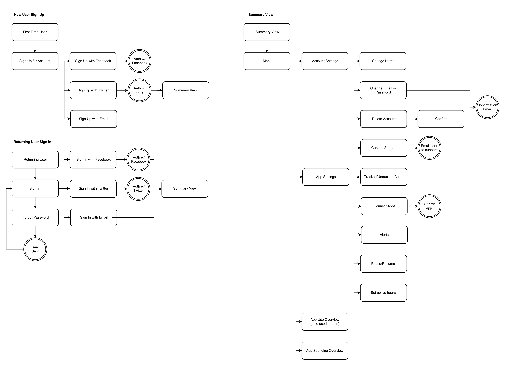

1
DISCOVERY
1 DISCOVERY
Habit is a personal project I led from start to finish with guidance from a mentor. After the initial idea was concepted, I began with completing a competitive SWOT analysis and gathering data through a user survey. This research showed an opportunity for Habit, so I moved forward in developing user personas, the foundation of the app’s design and features.

Users had a variety of goals they wanted to achieve: being mindful of time spent on social media throughout the day, maintaining current boundaries, and being attentive to money spent on apps. When creating user stories, each goal was given attention and incorporated into the design. User flows also reflected these goals, and outlined a structure for users to easily navigate the app.
